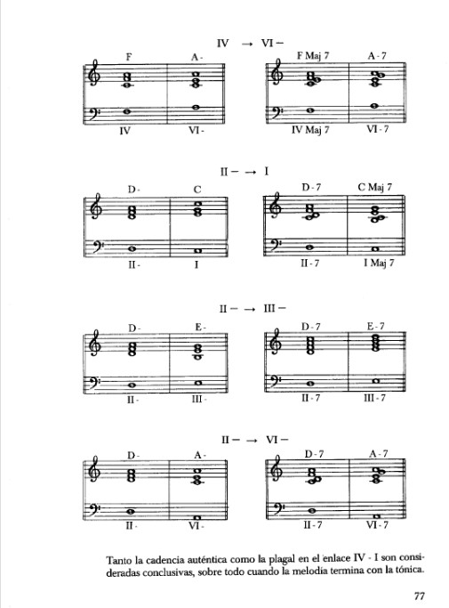
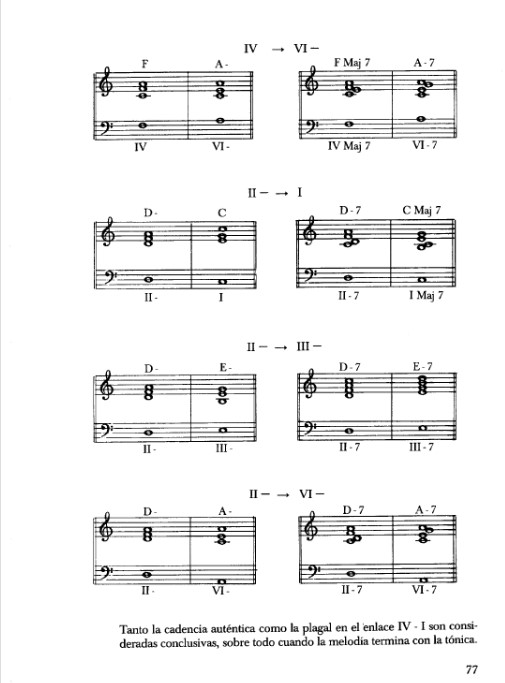
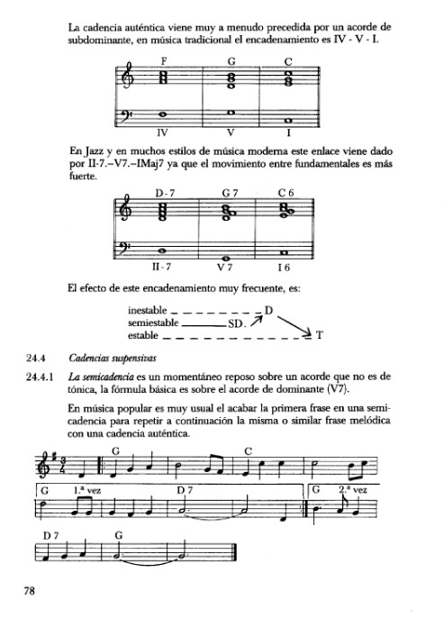

Cadencias y Cadenas
Los enlaces entre los acordes de una progresión armónica pueden catalogarse en cadencias y cadenas.
Cadencia
Es una sucesión armónica que nos lleva a un cierto punto de reposo. Viene a ser como la puntuación en la lengua escrita; los tipos de cadencia determinan el tipo de reposo en la frase musical como los puntos y comas lo hacen en el lenguaje escrito.
Clasificación de las cadencias
Hay cuatro tipos de cadencias
- Auténtica.
- Plagal.
- Rota.
- Semicadencia.
Cadencias conclusivas
La cadencia auténtica viene determinada por un reposo sobre el acorde de tónica (1) al que se llega desde el acorde de dominante (V7).
 
